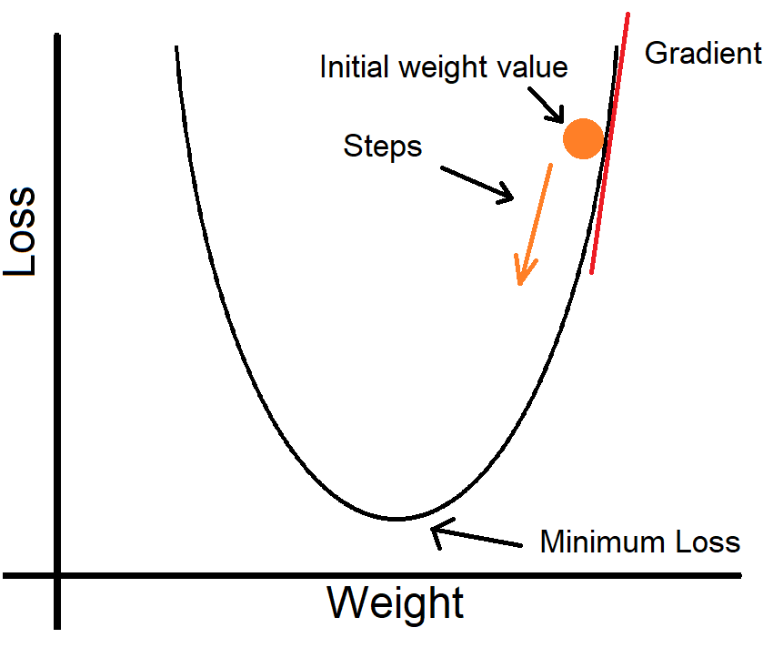
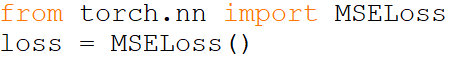
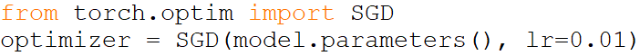
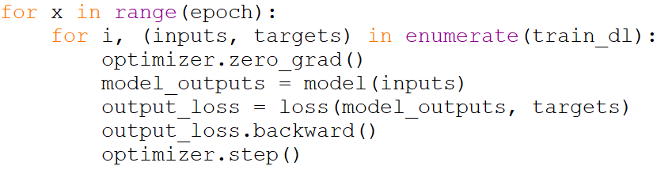
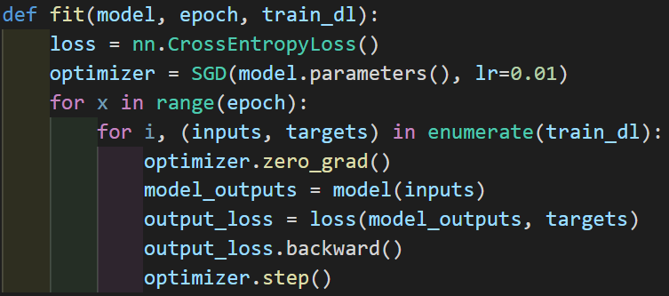

Now, let's start training. We need to define a training loop. This loop should decrease the loss by changing the weight.
Training A Classification Model
To do what we stated above, first we'll go through the training process.
The Loss Function
The loss function is what we use to evaluate how well a model performs. What results from our loss function is what we use next to calculate the gradient so that we can do gradient descent.
There are many different loss functions out there, but each one serves a different purpose. For example, there is one for regression, and one for multi-class classification, and one for binary classification etc. Let's talk about some here.
MSE
Mean squared error is used in regression. We calculate the difference between the predicted value and the target and square it. We do this for the rest of the data/batch then take the average. A question I get quite frequently is: "Why not just take the difference and average it?". The answer to this question is: if we overestimate a lot and underestimate a lot, then our loss would be very small, which is obviously wrong as it should be very high, so squaring makes the loss always positive. Also, we don't take the absolute error because we can't use gradient descent with it. It is not differentiable.
Here, our loss is quadratic. If you know calculus, you'll know that the gradient gives us the rate of change of the loss. We have the gradient of the loss with respect to the weight.
To calculate which direction to go: If the gradient is positive, we decrease the weight's value, and if the gradient is negative, we increase the weight's value. This way we head to a lower loss.
Here we import the MSE loss function that comes with Pytorch. We can now call loss(inputs, targets) to calculate the loss.
Cross-Entropy Loss
This loss function is used in classification. There is also Binary Cross-Entropy which is used for binary classification, though normal Cross-Entropy can be used too.
How it works is that it takes the probability of the actual target predicted by the model, then takes the logarithm of it. If the probability is high, then it is a very small negative number, but if it is small, then it is a big negative number. We then multiply the number by -1 to get positive values. This means that if the probability is high, then the loss is low, and vice versa.

If a model does not output probabilities, we apply softmax which can convert the numbers into probabilities that sum up to 1. This function is already implemented in the Cross-Entropy function in Pytorch.

Importing Cross-Entropy loss function from the Pytorch library. We can now call loss(inputs, targets) to use the function to calculate the loss:
Optimizers
There are a lot of optimizers with really fancy features, but right now we'll stick to SGD (Stochastic Gradient Descent) which update the parameters of the model with a partition (batches) of the data at a time unlike gradient descent which uses all the data at once.
To use the SGD optimizer from Pytorch:
We give it in our model's parameters as they are the values that we want to optimize. We also give it a learning rate. The learning rate is the step size that we take when updating our weights. Too high a value can cause our model to reach suboptimal weigths quickly, and too small a value will cause the training to take forever. How it works is: the learning rate is multiplied by the gradient, then we subtract that from the corresponding weight. The value we pick for the learning rate requires some testing, but you could try to set it between 0.01 and 0.0001.
Training Loop
Here is our training loop. First, we need to set the number of epochs. This is the number of passes we'll do through our data. Under that for loop, we have another for loop that passes through the training data. Each loop gives us one batch. Now we have the inputs and the targets, we make our predictions on the input using model(inputs), then calculate the loss using loss(model_outputs, targets), then calculate the gradients using the .backward() method, and let the optimizer optimize the parameters (optimizer.step()).
Before each loop, we set the gradients to 0 (optimizer.zero_grad()), which we need to explicitly do in Pytorch so the gradients don't accumulate.
We'll now make a function that puts all this together:
Conclusion
So now that we have trained our model, it's time to evaluate it. See you next lesson!
Challenge!
Our fit() function is pretty plain. It does its job but it doesn't give us any feedback during training on how well the model is performing. Our challenge is that you implement a fit function that shows us the accuracy and loss. Keep in mind that you'll need to search. Good luck!